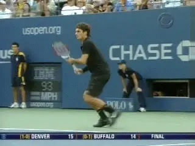
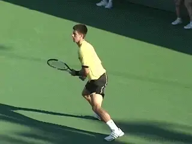
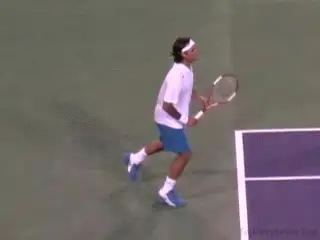
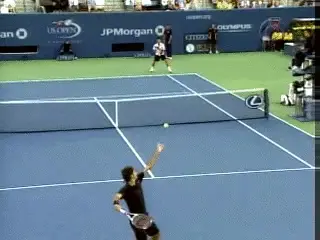
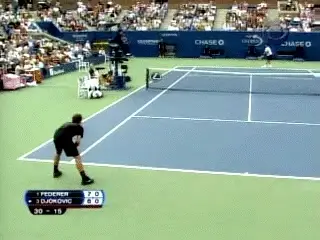
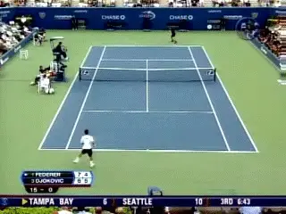
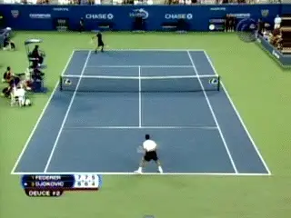

Previous: Bridging the Technical and Mental Divide: Implementing Technical Change under Pressure | 🏠 Mental Game Home | Next: Concentration
Choking, Yes, Even in the U.S.Open Final
By Allen Fox, Ph.D.

In the first set Roger was shaky and on edge.
In addition to a display of great tennis by two of the classiest champions in the modern game, the 2007 US Open final between Roger Federer and Novak Djokovic held a number of useful lessons for the astute tennis aficionado. Not the least of these was provided by an exhibition of choking by both players, the magnitude of which is seldom seen in a major championship final. There was much here to learn about what causes players to choke and, if it does occur, how to reduce its damage. The following is a kind of emotional autopsy of the match, providing a framework for our conclusions.
From the outset Federer was obviously nervous and on edge. Of course, he had plenty of reason to be. In the last year the drum beat in the media about him being the greatest player of all time had been incessant. Is he or isn't he? The question had been massaged ad nauseam by the pundits, not to mention counting down his assault on Pete Sampras' record of winning 14 majors.
Federer had 11 going into the tournament, and one more would put him ahead of Bjorn Borg and Rod Laver who were tied with him at 11 and would put him even with all-time great, Roy Emerson, at 12. He had been playing magnificently going into the final, particularly in the quarters against Andy Roddick, who played one of his best matches in years yet was still unable to win a set, and followed it up with his usual drubbing of Nikolay Davydenko.

Djokovic: a super talent with a recent win over Roger.
But there was still one small obstruction in the way of those beautiful new record book numbers. He faced the disagreeable task of winning the final against Djokovic, a young super-talent who had beaten him in Montreal only a few weeks earlier and was a scary piece of work. What would everyone say if he lost? (Remember how, when he lost twice in a row to Canas early in the year, the talk suddenly became, "Well, Federer's good but not that good.") It was enough to make anyone nervous.
So Federer looked shaky in the first set --missing more than usual. When he is feeling good and his game is functioning with its usual precision, he misses virtually nothing and winners flow like rum-punch at a toga party. On the other hand, when he gets nervous his errors stand out more blatantly in relief and he often misses by stunningly wide margins. For example, all too frequently against Nadal on clay he will miss easy forehands at mid-court -- easy for him, at least - which, under normal circumstances, he hits for certain winners.

When he is relaxed, Roger's strokes appear fluid and easy.
Maybe it is because he is normally so relaxed and confident that the infrequent bouts of nerves cause his game to deviate more widely from its norms than with most players, who must deal with unruly nerves more often. Or possibly it is due to his strokes being so fluid and easy, relying for their effectiveness more on looseness in the arms and feel in the hands than do the more mechanically produced strokes of his opponents. Whatever the reason, when Federer becomes nervous, it shows in his game, and it was obvious that he was nervous here from the beginning. To his great credit, however, his manner on court remained serene and unchanged. He had too much class, intelligence, and discipline to show it.
As for Djokovic, the magnitude and novelty of the situation didn't help his game much either, but he played solidly enough to serve for the first set at 6-5 and quickly went to 40-0, triple set point. The set was his for the taking, but as most players learn from painful experience, it is when one is ahead and on the verge of victory that one's nerves are most likely to become wobbly.
Djokovic played the first set point a bit cautiously and Federer hit a winner. Then the real trouble started. Federer hit two routine serve returns to Djokovic's backhand and Djokovic immediately missed them both - for him, terribly uncharacteristic errors. Two more set points came and went, one on an easy forehand error and one on a good shot by Federer. Djokovic finally blew the game completely by double faulting at ad out.

"Easy" unforced errors can only be explained by nerves.
In general, there are unforced errors and easy unforced errors -- these were the easy ones. And for a player of Djokovic's quality who normally makes so few, this many easy unforced errors can only be explained by nerves. Djokovic managed to regroup in the tie breaker and was actually ahead a mini-break at 3-2 before the nerves resurfaced and caused another easy error, following which he chucked his racket in disgust (never a good sign), and proceeded to lose the tiebreaker and set.
As he dashed his water bottle to the ground it was clear that Djokovic was agitated and distressed -- now down a set when, but for the nervous errors, he should have been up a set. Among the more interested observers of Djokovic's emotional disarray was, of course, Federer. He now realized that Djokovic was on the verge of falling apart. All he needed to do was come out tough in the second set, keep the pressure on, and Djokovic would likely crack completely. Play high-percentage, low-error tennis and the Championship was his. Unfortunately, these are just the kind of thoughts that get players into trouble, even geniuses like Federer. (When your opponent is choking, you are liable to choke yourself because you can see that as long as you don't screw up, you have him.)

Roger: so nervous he missed slice returns on second serves.
Djokovic served the first game of the second set, and, predictably, was missing his first serves. Federer was handed two short, easy second serves in a row (the kind he could hit back in his sleep), that he chipped into the middle of the net. His nerves were clearly acting up. When Federer wants to take a risk and hit an aggressive return off of his backhand side he uses a flat or topspin stroke. For safety, he uses his slice and, unless the serve is huge, almost never fails to put the ball in the court. These were slices, and badly missed ones at that, so he was obviously nervous.
Federer began playing so poorly that he brought Djokovic back into the match. He did everything to boost Djokovic's game except give him a backrub on changeovers. The one thing he didn't do, however, was lose his outward appearance of calm. Nevertheless, Djokovic was soon up 4-1 and had chances for a second "insurance" break on Federer's serve. He tightened up again, missed, and Federer held. Distressed at the latest lost opportunity, Djokovic faltered, lost serve and soon the match was even. But wonderful talent that he is, Djokovic was by no means through. With Federer serving and down 5-6, Djokovic had two set points at 15-40.

An overplayed forehand and creeping negativity.
Federer saved the first with an ace, and Djokovic handed him the second by overplaying a forehand early in the point, another error due to errant emotion rather than simple random chance. Having lost opportunities to be up two sets to none, Djokovic allowed in just enough creeping negativity to cost him the second set tiebreaker, and he was now down two sets to love.
The third set went along evenly until Djokovic served down 4-5. It was here at deuce that his emotional disarray came forward to play its ultimate evil trick. This is a huge point for a fully--functioning player who still has hopes of winning the match. After all, Djokovic is only 3 games away from winning the third set and three sets away from winning the Championship. When one logically thinks about it, he was going to have to win three sets against Federer to win the Championship when the match started, so why play at all if this is not a possibility? If he wins two points and holds serve he could well turn the match around. But of course that is not how he saw the situation. He was just off-balance enough to blow an easy backhand, get down match point, and follow it up with an ill-conceived and feeble drop-shot that landed halfway up the net. He had, at some level, given up.

The last two points: a bad backhand miss and an ill-conceived drop shot.
The lessons to be learned here are important at any level of tennis. First, everyone chokes. There is no shame in it. Federer probably won the match because he kept his cool after choking while Djokovic did not. If you find yourself choking in a match (and who of us won't?) it is important to realize that nerves come and go, and because you choke on one occasion it does not mean you will choke on another. The trick is to confine the damage to only those points on which you actually choke, which Federer did.
Getting rattled about the lost points, as Djokovic did, extends the damage. This does not mean that Djokovic completely lost his head and obviously threw away the match. He didn't, and his emotional upset probably only cost him a few points a set. However, in a 6-4, 7-5, or 7-6 set, the average difference in total points won by the winning player is 3 or 4, so those few points a set were likely to have been just enough to get him beaten. In the last game this was obviously the case.
Note: I want to extend my special thanks to Steve Flink for his help and for sharing his accurate, detailed, and brilliant descriptions of the crucial points in the US Open final.
This article is excerpted from Allen's new book, Tennis: Winning the Mental Match, which will be available at the end of 2010 on Amazon and on Allen's new website, www.allenfoxtennis.net.
Read More From Allen!
Visit him at www.allenfoxtennis.net
|  | Tennis is mentally the most difficult sport due to it's personal nature which makes winning and losing feel more |
| important than they are. In this new book, Allen offers his proven solutions to problems such as choking, reducing | |
| stress, finishing matches, and developing confidence. Based on a life time of high level play and coaching success, | |
| it's a must for all competitive players. | |
| [ to | |
| Order](http://www.amazon.com/Tennis-Winning-Mental-Allen-Fox/dp/0615407765/ref=sr_1_1?ie=UTF8&qid=1336083459&sr=8-1). |
|  | eminently preferable to losing. In his new book, The |
| Winner's Mind, Allen lays out an original step-by-step | |
| plan for succeeding at any of life's endeavors, based on | |
| his first hand and very personal observations of the | |
| careers of both world-class tennis players and successful | |
| businessman. The bottom line is that even if you are not a | |
| born champion--and only a tiny percentage of us are--you | |
| can still use the success strategies of champions to tilt | |
| the odds in your favor. Writing with brutal honesty and dry | |
| humor, Fox lays out the common mental characteristics of | |
| winners in sports and in life. He explains the critical | |
| role of intellect over emotion. He analyzes the struggle | |
| between ambition and fear and the insidious and pervasive | |
| fear of failure that undermines so many of us. He then | |
| outline how to confront and overcome these fears in your | |
| life and career, even when they are initially subconscious. | |
| Must reading from one of the great thinkers in tennis, and | |
| a Renaissance Man in life. [ to | |
| Order](http://www.tennis-warehouse.com/descpage-MIND.md). | |
| To purchase this book you can also send a check for \$17.95 | |
| to Allen Fox, 1120 Inverness Place, San Luis Obispo, CA. | |
| 93401. The price includes shipping. |
|  | insightful analysts in modern tennis. A top 10 |
| American player from the glory days before Open | |
| tennis, Fox played many of the legendary greats, among | |
| them Roy Emerson, Rod Laver, Stan Smith, and Arthur | |
| Ashe. At Pepperdine he developed the men's tennis | |
| program into an elite contender for national titles, | |
| and gave Brad Gilbert the insights that became the | |
| foundation for "Winning Ugly". His book Think to Win | |
| is a modern classic. He has also starred in a series | |
| of acclaimed videos, including Pro Secrets of Match | |
| Play and Allen Fox's Ultimate Tennis Lesson. | |
Previous: Bridging the Technical and Mental Divide: Implementing Technical Change under Pressure | 🏠 Mental Game Home | Next: Concentration